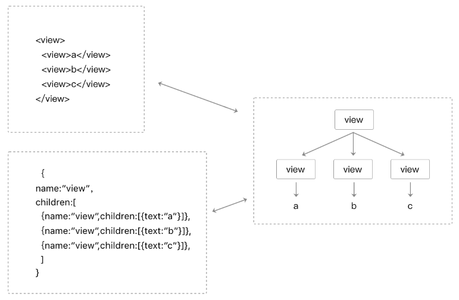

在开发UI界面过程中，程序需要维护很多变量状态，同时要操作对应的UI元素。随着界面越来越复杂，我们需要维护很多变量状态，同时要处理很多界面上的交互事件，整个程序变得越来越复杂。
通常界面视图和变量状态是相关联的，如果有某种“方法”可以让状态和视图绑定在一起（状态变更时，视图也能自动变更），那我们就可以省去手动修改视图的工作。
这个方法就是“数据驱动”，下边我们来介绍一下小程序的数据驱动基本原理。
WXML结构实际上等价于一棵Dom树，通过一个JS对象也可以来表达Dom树的结构，如图3-2所示。

图3-2 WXML结构和JS对象均可以表示一棵Dom树
WXML可以先转成JS对象，然后再渲染出真正的Dom树，回到“Hello World”那个例子，我们可以看到转换的过程如图3-3所示。

图3-3 WXML结构转JS对象，再转Dom树
通过setData把msg数据从“Hello World”变成“Goodbye”，产生的JS对象对应的节点就会发生变化，此时可以对比前后两个JS对象得到变化的部分，然后把这个差异应用到原来的Dom树上，从而达到更新UI的目的，这就是“数据驱动”的原理，如图3-4所示。

图3-4 状态更新的时候，通过对比前后JS对象变化，进而改变视图层的Dom树